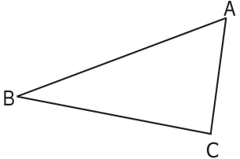
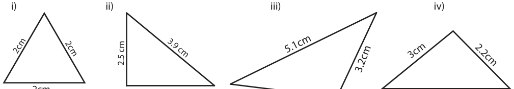
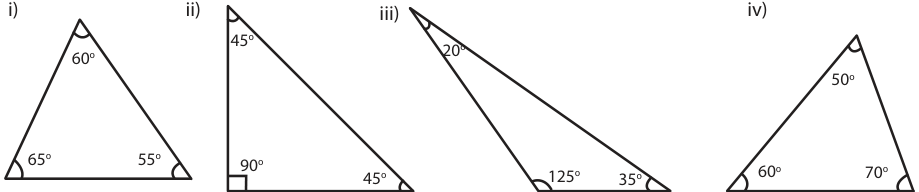
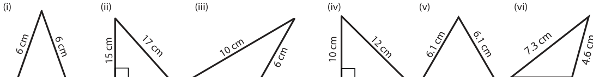
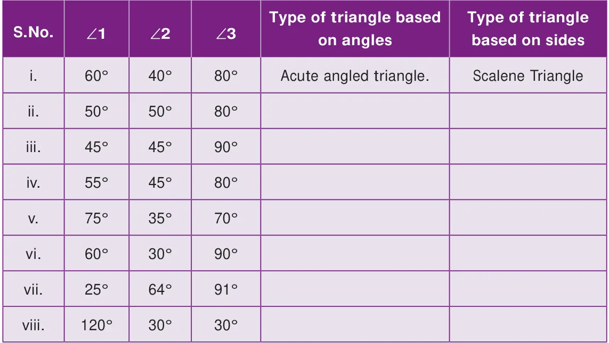
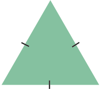

- Fill in the blanks:
- Every triangle has at least ______ acute angles.
- A triangle in which none of the sides are equal is called a ______.
- In an isosceles triangle _______angles are equal.
- The sum of three angles of a triangle is ______.
- A right angled triangle with two equal sides is called _______.
- Match the following:
- No sides are equal - Isosceles triangle
- One right angle - Scalene triangle
- One obtuse angle - Right angled triangle
- Two sides of equal length - Equilateral triangle
- All sides are equal - Obtuse angled triangle
- In ΔABC, name the

- Three sides: ______ , ______ , _______
- Three Angles: ______ , ______ , _______
- Three Vertices: ______ , _______ , _______
- Classify the given triangles based on its sides as scalene, isosceles or equilateral.

- Classify the given triangles based on its angles as acute angled, right angled or
obtuse angled.

- Classify the following triangles based on its sides and angles.

4 cm 8 cm 6 cm 10 cm 6.1 cm 4.1 cm
- Can a triangle be formed with the following sides? If yes, name the type of triangle.
- 8 cm, 6 cm, 4 cm (ii) 10 cm, 8 cm, 5 cm
- 6.2 cm, 1.3 cm, 3.5 cm (iv) 6 cm, 6 cm, 4 cm
- 3.5 cm, 3.5 cm, 3.5 cm (vi) 9 cm, 4 cm, 5 cm
- Can a triangle be formed with the following angles? If yes, name the type of triangle.
- \(60 ^{\circ}\) , \(60 ^{\circ}\) , \(60 ^{\circ}\) (iii) \(60 ^{\circ}\) , \(40 ^{\circ}\) , \(42 ^{\circ}\) (v) \(70 ^{\circ}\) , \(60 ^{\circ}\) , \(50 ^{\circ}\)
- \(90 ^{\circ}\) , \(55 ^{\circ}\) , \(35 ^{\circ}\) (iv) \(60 ^{\circ}\) , \(90 ^{\circ}\) , \(90 ^{\circ}\) (vi) \(100 ^{\circ}\) , \(50 ^{\circ}\) , \(30 ^{\circ}\)
- Two angles of the triangles are given. Find the third angle.
- \(80 ^{\circ}\) , \(60 ^{\circ}\) (iii) \(52 ^{\circ}\) , \(68 ^{\circ}\) (v) \(120 ^{\circ}\) , \(30 ^{\circ}\)
- \(75 ^{\circ}\) , \(35 ^{\circ}\) (iv) \(50 ^{\circ}\) , \(90 ^{\circ}\) (vi) \(55 ^{\circ}\) , \(85 ^{\circ}\)
- I am a closed figure with each of my three angles is \(60 ^{\circ}\) . Who am I?
- Using the given information, write the type of triangle in the table given below

Objective Type Questions

- The given triangle is_______.
- a right angled triangle b) an equilateral triangle
- a scalene triangle d) an obtuse angled triangle
- If all angles of a triangle are less than a right angle, then it is called _______.
- an obtuse angled triangle b) a right angled triangle
- an isosceles right angled triangle d) an acute angled triangle
- If two sides of a triangle are 5 cm and 9 cm, then the third side is______.
- 5 cm b) 3 cm c) 4 cm d) 14 cm
- The angles of a right angled triangle are
- acute, acute, obtuse b) acute, right, right
- right, obtuse, acute d) acute, acute, right
- An equilateral triangle is
- an obtuse angled triangle b) a right angled triangle
- an acute angled triangle d) a scalene triangle